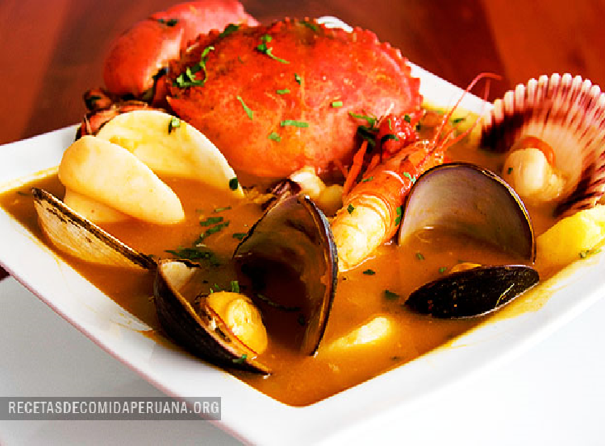
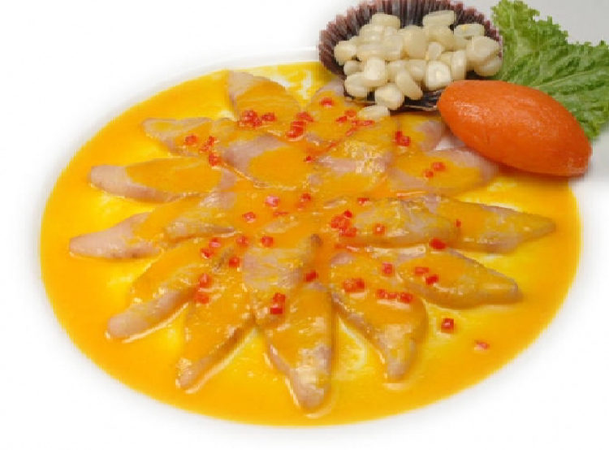

MENÚ
Selecciona uno de nuestros platos ♥
ARROZ CON MARISCOS

S/. 65.00
- Servido sobre la mesa, este palto es sin duda un festival de colores y sabores. El caldo de choro, el vino y los langostinos hacen del arroz con mariscos uno de los fijos en las cebicherías, aunque algunas personas sean alérgicas a ellos.
CEBICHE

S/. 30.00
- Es el emblema de nuestra cocina. Sinónimo de peruanidad, esta mezcla bendita de pescado, cebolla, limón, ají limo y sal enloquece a peruanos y extranjeros. De pescado, mixto, de conchas negras o de pulpo, el cebiche no se cansa de darle alegría a nuestro paladar.
CHORITOS A LA CHALACA

S/. 40.00
- Es un piqueo ideal antes de un cebiche o un arroz con mariscos, los choritos a la chalaca son elaborados a base a choros, cebolla, tomate picado, granos de maíz hervido y jugo de limón.
JALEA MIXTA CON PESCADO

S/. 59.00
- Originaria de la zona norte, específicamente de las regiones de Lambayeque y Piura, la jalea (pescado, mariscos y mixta) mezcla el pescado enharinado con la yuca frita creando uno de los piqueos marinos más sabrosos de nuestra comida.
LECHE DE TIGRE

S/. 29.00
- Puede considerarse un hijo del cebiche. Picante y reparador, este preparado se sirve puro o mezclado con trozos de pescado, mariscos y cancha serrana. También se puede encontrar la popular leche de pantera a base de cebiche de pescado y conchas negras.
SUDADO DE PESCADO

S/. 50.00
- Es un plato nutritivo y delicioso. Dicen los expertos que los mejores sudados son de tramboyo, pez diablo y cabrilla ricos en omega 3, aunque cualquier pescado es bueno con la preparación correcta. Algunos chef, sobre todo en el norte, utilizan chicha de jora para darle un sabor más intenso otra opción es el vino blanco.
PARIHUELA

S/. 42.00
- Tiene fama de reponer las energías perdidas tras una agitada noche. Pulpo, calamar, camarón, langostinos y pescados se mezclan en una espesa sopa que no se cansa de conquistar paladares.
TACU TACU CON MARISCO

S/. 35.00
- Este plato mezcla de manera extraordinaria el sabor criollo del tacu tacu con un relleno espectacular de mariscos. Algunos lo pueden acompañar solo de una salsa criolla o incluso con una salsa picante de langostinos.
TIRADITO

S/. 53.00
- Con un corte de pescado similar al del sashimi y acompañado de las cremas de ají o rocoto, el tiradito es uno de los platos más famosos de nuestra gastronomía marina. Ligero, refrescante e ideal para acompañar los almuerzos veraniegos.